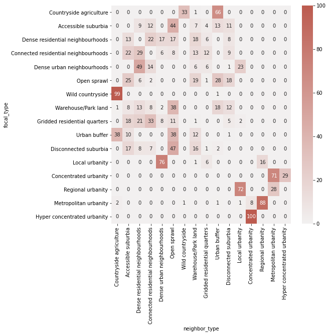

import geopandas as gpd
import libpysal
import pandas as pd
import dask_geopandas
import itertools as it
import collections
import pygeos
from numba import njit, prange
import numpy
QUEEN = 1
ROOK = 2
# https://github.com/pysal/libpysal/pull/427
class ContiguityWeightsLists:
"""
Contiguity for a collection of polygons using high performance
list, set, and dict containers
"""
def __init__(self, collection, wttype=1):
"""
Arguments
=========
collection: PySAL PolygonCollection
wttype: int
1: Queen
2: Rook
"""
self.n = len(collection)
self.coordinates = pygeos.get_coordinates(collection)
self.coords_per_geom = pygeos.get_num_coordinates(collection)
self.coord_indices = numpy.repeat(numpy.arange(self.n), self.coords_per_geom)
self.edge_indices = numpy.repeat(numpy.arange(self.n), self.coords_per_geom - 1)
self.wttype = wttype
self.contiguity()
def contiguity(self):
if self.wttype == QUEEN: # points are hashed
hashes = _point_hash(self.coordinates)
indices = self.coord_indices
elif self.wttype == ROOK: # edges are hashed
hashes = _edge_hash(self.coordinates, self.coord_indices, self.coords_per_geom)
indices = self.edge_indices
else:
raise Exception("Weight type {} Not Understood!".format(self.wttype))
hash_to_geom_lut = collections.defaultdict(set)
for i, hash_ in enumerate(hashes):
hash_to_geom_lut[hash_].add(indices[i])
edgelist = set()
shared_vertices = []
for hash_, neighbors in hash_to_geom_lut.items():
if len(neighbors) > 1:
for i in neighbors:
for j in neighbors:
if i != j:
edgelist.update([(i, j)])
self.edgelist = edgelist
@njit
def _point_hash(coordinates):
n = coordinates.shape[0]
result = numpy.ones(n)
for i in range(n):
target = (coordinates[i, 0], coordinates[i, 1])
result[i] = hash(target)
return result
@njit
def _edge_hash(coordinates, indices, n_coordinates_per_geom):
n_coordinates = coordinates.shape[0]
n_edges = numpy.sum(n_coordinates_per_geom - 1)
result = numpy.ones(n_edges)
offsets = numpy.cumsum(n_coordinates_per_geom)
on_point = 0
edge_ix = 0
for i in range(n_coordinates):
on_point += 1
index = indices[i]
offset = offsets[i]
tail = coordinates[i]
if on_point == n_coordinates_per_geom[index]: # would modulo be faster?
on_point = 0
continue
else:
head = coordinates[i + 1]
# ensure left-to-right ordering to avoid reversability issues
if head[0] > tail[0]:
head, tail = tail, head
edge_tuple = (head[0], head[1], tail[0], tail[1])
result[edge_ix] = hash(edge_tuple)
edge_ix += 1
return result
def from_array(geometry_array):
import pygeos
all_geoms = pygeos.is_geometry(geometry_array).all()
assert all_geoms, "Input must be pygeos geometry array."
_constructor = lambda x: ContiguityWeightsLists(x, wttype=2)
edgelist = _constructor(geometry_array).edgelist
return pd.DataFrame(edgelist, columns=["focal", "neighbor"]).assign(weight=1)
signatures = gpd.read_parquet("../../urbangrammar_samba/spatial_signatures/signatures/signatures_combined_levels_orig.pq")
signatures
| kmeans10gb | geometry | level2 | signature_type | |
|---|---|---|---|---|
| 0 | 0 | POLYGON Z ((62220.000 798500.000 0.000, 62110.... | 0.0 | 0_0 |
| 1 | 0 | POLYGON Z ((63507.682 796515.169 0.000, 63471.... | 0.0 | 0_0 |
| 2 | 0 | POLYGON Z ((65953.174 802246.172 0.000, 65950.... | 0.0 | 0_0 |
| 3 | 0 | POLYGON Z ((67297.740 803435.800 0.000, 67220.... | 0.0 | 0_0 |
| 4 | 0 | POLYGON Z ((75760.000 852670.000 0.000, 75700.... | 0.0 | 0_0 |
| ... | ... | ... | ... | ... |
| 96699 | 9 | POLYGON ((323321.005 463795.416, 323319.842 46... | 8.0 | 9_8 |
| 96700 | 9 | POLYGON ((325929.840 1008792.061, 325927.377 1... | 8.0 | 9_8 |
| 96701 | 9 | POLYGON ((337804.770 1013422.583, 337800.122 1... | 8.0 | 9_8 |
| 96702 | 9 | POLYGON ((422304.270 1147826.990, 422296.000 1... | 8.0 | 9_8 |
| 96703 | 9 | POLYGON ((525396.260 439215.480, 525360.920 43... | 8.0 | 9_8 |
96704 rows × 4 columns
%%time
w = from_array(signatures.geometry.values.data)
CPU times: user 1min 28s, sys: 3.14 s, total: 1min 31s
Wall time: 1min 31s
w
| focal | neighbor | weight | |
|---|---|---|---|
| 0 | 89773 | 58070 | 1 |
| 1 | 64658 | 50056 | 1 |
| 2 | 82533 | 16531 | 1 |
| 3 | 14920 | 81277 | 1 |
| 4 | 49401 | 14797 | 1 |
| ... | ... | ... | ... |
| 251953 | 459 | 64234 | 1 |
| 251954 | 34567 | 76046 | 1 |
| 251955 | 76848 | 35294 | 1 |
| 251956 | 63402 | 28287 | 1 |
| 251957 | 49876 | 72999 | 1 |
251958 rows × 3 columns
w["focal_type"] = signatures.signature_type.iloc[w.focal.values].values
w["neighbor_type"] = signatures.signature_type.iloc[w.neighbor.values].values
w
| focal | neighbor | weight | focal_type | neighbor_type | |
|---|---|---|---|---|---|
| 0 | 89773 | 58070 | 1 | 2_1 | 6_0 |
| 1 | 64658 | 50056 | 1 | 7_0 | 5_0 |
| 2 | 82533 | 16531 | 1 | 2_0 | 1_0 |
| 3 | 14920 | 81277 | 1 | 1_0 | 2_0 |
| 4 | 49401 | 14797 | 1 | 5_0 | 1_0 |
| ... | ... | ... | ... | ... | ... |
| 251953 | 459 | 64234 | 1 | 0_0 | 7_0 |
| 251954 | 34567 | 76046 | 1 | 3_0 | 8_0 |
| 251955 | 76848 | 35294 | 1 | 8_0 | 3_0 |
| 251956 | 63402 | 28287 | 1 | 7_0 | 3_0 |
| 251957 | 49876 | 72999 | 1 | 5_0 | 8_0 |
251958 rows × 5 columns
matrix = pd.crosstab(w["focal_type"], w["neighbor_type"])
types = {
"0_0": "Countryside agriculture",
"1_0": "Accessible suburbia",
"3_0": "Open sprawl",
"4_0": "Wild countryside",
"5_0": "Warehouse/Park land",
"6_0": "Gridded residential quarters",
"7_0": "Urban buffer",
"8_0": "Disconnected suburbia",
"2_0": "Dense residential neighbourhoods",
"2_1": "Connected residential neighbourhoods",
"2_2": "Dense urban neighbourhoods",
"9_0": "Local urbanity",
"9_1": "Concentrated urbanity",
"9_2": "Regional urbanity",
"9_4": "Metropolitan urbanity",
"9_5": "Hyper concentrated urbanity",
"9_3": "outlier",
"9_6": "outlier",
"9_7": "outlier",
"9_8": "outlier",
}
matrix.columns = matrix.columns.map(types)
matrix.index = matrix.index.map(types)
matrix = matrix.drop(columns="outlier").drop("outlier")
matrix
| neighbor_type | Countryside agriculture | Accessible suburbia | Dense residential neighbourhoods | Connected residential neighbourhoods | Dense urban neighbourhoods | Open sprawl | Wild countryside | Warehouse/Park land | Gridded residential quarters | Urban buffer | Disconnected suburbia | Local urbanity | Concentrated urbanity | Regional urbanity | Metropolitan urbanity | Hyper concentrated urbanity |
|---|---|---|---|---|---|---|---|---|---|---|---|---|---|---|---|---|
| focal_type | ||||||||||||||||
| Countryside agriculture | 0 | 6 | 0 | 3 | 0 | 11 | 7323 | 181 | 1 | 14659 | 0 | 3 | 0 | 0 | 3 | 0 |
| Accessible suburbia | 6 | 0 | 2710 | 3573 | 2 | 13403 | 6 | 2068 | 1079 | 4070 | 3423 | 0 | 0 | 0 | 0 | 0 |
| Dense residential neighbourhoods | 0 | 2710 | 0 | 4622 | 3457 | 3450 | 0 | 3632 | 1246 | 25 | 1600 | 1 | 0 | 0 | 0 | 0 |
| Connected residential neighbourhoods | 3 | 3573 | 4622 | 0 | 1012 | 1222 | 1 | 2163 | 1939 | 35 | 1508 | 2 | 0 | 1 | 0 | 0 |
| Dense urban neighbourhoods | 0 | 2 | 3457 | 1012 | 0 | 5 | 0 | 414 | 443 | 1 | 52 | 1603 | 0 | 0 | 0 | 0 |
| Open sprawl | 11 | 13403 | 3450 | 1222 | 5 | 0 | 2 | 10383 | 660 | 14793 | 9521 | 0 | 0 | 0 | 0 | 0 |
| Wild countryside | 7323 | 6 | 0 | 1 | 0 | 2 | 0 | 0 | 2 | 48 | 0 | 4 | 0 | 0 | 1 | 0 |
| Warehouse/Park land | 181 | 2068 | 3632 | 2163 | 414 | 10383 | 0 | 0 | 73 | 4837 | 3313 | 30 | 0 | 0 | 0 | 0 |
| Gridded residential quarters | 1 | 1079 | 1246 | 1939 | 443 | 660 | 2 | 73 | 0 | 16 | 273 | 133 | 0 | 0 | 0 | 0 |
| Urban buffer | 14659 | 4070 | 25 | 35 | 1 | 14793 | 48 | 4837 | 16 | 0 | 420 | 3 | 0 | 0 | 1 | 0 |
| Disconnected suburbia | 0 | 3423 | 1600 | 1508 | 52 | 9521 | 0 | 3313 | 273 | 420 | 0 | 0 | 0 | 1 | 0 | 0 |
| Local urbanity | 3 | 0 | 1 | 2 | 1603 | 0 | 4 | 30 | 133 | 3 | 0 | 0 | 0 | 341 | 1 | 0 |
| Concentrated urbanity | 0 | 0 | 0 | 0 | 0 | 0 | 0 | 0 | 0 | 0 | 0 | 0 | 0 | 0 | 12 | 5 |
| Regional urbanity | 0 | 0 | 0 | 1 | 0 | 0 | 0 | 0 | 0 | 0 | 1 | 341 | 0 | 0 | 133 | 0 |
| Metropolitan urbanity | 3 | 0 | 0 | 0 | 0 | 0 | 1 | 0 | 0 | 1 | 0 | 1 | 12 | 133 | 0 | 0 |
| Hyper concentrated urbanity | 0 | 0 | 0 | 0 | 0 | 0 | 0 | 0 | 0 | 0 | 0 | 0 | 5 | 0 | 0 | 0 |
import seaborn as sns
import urbangrammar_graphics as ugg
import matplotlib.pyplot as plt
fig, ax = plt.subplots(figsize=(8, 8))
sns.heatmap(matrix.divide(matrix.sum(axis=1), axis=0).astype('float') * 100, cmap=sns.light_palette(ugg.HEX[2], n_colors=256), annot=True, fmt='.0f', vmax=100)
plt.savefig("co_occurence.pdf", bbox_inches="tight")

matrix.to_parquet("co_occurence.pq")